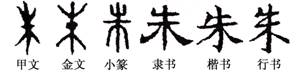

〖朱姓是一个崇拜赤心木的氏族〗
“朱”字的内涵是很丰富的。在我们祖先那部最古老的汉语字典——《说文解字》中，对“朱”作了如下的描述：“朱，赤心木，松柏属。从木，一在其中。”原来，朱姓的“朱”字，它最原始的意义并非红色，而是指称一种树心为红色的树木。
渊博的古文字学家们解释说：古“朱”字是所谓“合体指事”文字，它兼有象形和指事的特点。从图的甲骨、金文我们也可清晰地看到，“朱”字由“木”和“一”两个构件组成：“木”象树木之形，“一”是一个指示性符号，原本写成“·”形状，标在木中，象征树心。清代大文字学家段玉裁说得明白，朱是赤心木，所谓“赤心不可象，故以一识之。”就象“本”字的一指树下“末”字的一指树上一样，“朱”字的一指树中。
知道了“朱”字的原始含义是一种赤心树，对朱姓起源来说，才破译了第一个密码。要知道朱姓与赤心木的关系，仍需进一层的分析。
“朱”字，在最古老的甲骨文和金文中写作本或者米，小篆写作米。在现代汉语中，朱字的含义就是“红色”。
远古史和图腾学的知识告诉我们，人类在童年时代盛行各种图腾崇拜，这些远古的先民们，往往以某种动物和植物作为氏族群体的神圣象征，并认为全体氏族成员都为这种图腾的后裔。最古老的朱姓的形成，也是这种图腾崇拜的结果。 在采集农业的原始阶段，人类主要生活在森林地带。对这些赖以生存的树木植物，人类本能地产生出各种依恋、亲切、敬畏甚至崇拜的情感和心理。其中便有这么一支血缘氏族群体，对他们周围的赤心木产生了这种神秘而深厚的特殊情感。他们把这种赤心木叫做朱木，并把它当作本氏族的神而崇拜，认为自己就是这种神圣的朱木的后裔。于是，朱木便成为这个氏族的族徽和图腾，这个氏族便把自己称为“朱”氏族，久而久之，这一习俗被本氏族代代相承，并得到了周围其他氏族的普遍认同。于是，作为后世一部分朱姓的血缘先祖——朱氏族便形成了。
人过留名，雁过留声。古代的朱人不但把朱木当作氏族的图腾，把自己氏族叫朱氏族，且往往将他们栖息、生活的地方也叫做朱或朱方。
最早的朱方在哪里?因史无明载，我们今天已无从查考。但有一点是可以肯定的，即最早的朱方，当在生长松柏类赤心木的我国华北地区。因此，最古老的朱氏族，也应当发源于中原和华北地区。
当我们按照上古史的演进轨迹去探索朱氏族时，我们发现了文献所记的最早朱地是古朱骧氏所居的朱。《路史·后纪》记载：“朱襄氏都于朱。”这里的“朱”地，典籍又写作“株”，在今河南淮阳县境内，《续汉书·郡国志》因此有“陈有株邑，盖朱襄之地”的记载。因此，虽然我们不能武断地认为今河南淮阳境内的古朱地是朱姓的发源地，那至少应是古代朱人早期的迁徙地。
在最早的文字材料甲骨文中也有“朱”地，如“卜宾……在朱”（后上一二·八）、“田朱”（遗一二—）。这里的“田朱”即在朱地狩猎，朱为地名，当在河南境内离商都不远的地方，很可能就是上面的淮阳县古朱地。由此可见远古朱人至商代仍有一部分居住在今河南境内。后世河南成为朱姓的一大郡望，很可能即与此有关。
大约在三皇五帝时代，北方和中原的朱人大批南迁江南，最后徙居、散布在我国的西南地区。这些朱氏先民南迁之后，便把原在中原北方地区的地名“朱”也搬到了南方。但这时的朱地已不止是指称某个地名，而是泛指整个朱人所在的西南地区。这种观念不久便得到了周边氏族的认同，所以中国古代先人不但把我国西南方叫朱方，甚至把西南天空叫朱天。
朱人南迁之后，仍崇拜朱木为图腾神，但已不能寻见北方松柏类赤心木了，于是，朱人便以南方生长的赤色木取而代之，仍叫朱木，这就是《山海经》中所记西南地区的“朱木”。今天云贵地区朱姓较多，可能也与此有关。作为朱氏族图腾的神树——朱木，在今存的上古文献中仍能找到一些蛛丝马迹。
〖叔术屡让君位〗
公元前796年，邾颜被周宣王诛杀后，其弟邾叔术继位为邾君。据说叔术之嫂，即邾颜的夫人盈氏，是个倾国倾城的绝色美妇。邾颜死后，他的这位夫人却颇为贞烈，当时各国王侯公子都垂涎她的美色，她却发誓：“谁能为我报杀夫杀君大仇，诛杀鲍、梁二贼，我便嫁给谁。”
叔术继位，本是由周宣王所命，但叔术即位后，却不盲从周室，仍能以国家及邾族利益为重。不久，他便率领邾人为国君即乃兄邾颜报仇，将杀君仇人鲁国的鲍广父、梁买子二人诛杀。而颜夫人盈氏果然实现诺言，改嫁小叔叔术为妻。
先前，盈氏与邾颜生有二子：夏父、友。再婚后，她又与叔术生了一子，名叫盱。叔术娶寡嫂为妻后，养兄子、育己子，不分彼此。当侄儿邾夏父长大成人后，叔术于公元前781年趁周宣王去世之机，一改周天子成命，把邾国君位拱手让还给前国君邾颜之子夏父，邾夏父复国为邾君后，非常感激叔父的恩德。为此，夏父欲将邾国一分为二，与叔术各治一半，叔术不肯；夏父又提出将邾国三分之一分给叔父，叔术又不肯；再提出分邾国四分之一给他，仍被拒绝；最后，夏父硬要将占邾国五分之一大的滥地（今山东省滕县东南虑昌乡）封给叔术，叔术再三推辞不得，只好接受。从此，邾叔术带其子邾盱及家人移居滥地，另建一个附庸于母邦邾国的小政权。
〖马前泼水〗
汉朝朱买臣有满腹才学，却未得到到功名，只得以打柴为生，入赘本地刘二公家为婿。因为贫富悬殊，夫妻经常吵闹。刘二公也嫌朱买臣不肯进取，便让女儿向丈夫讨休书（即离婚）。一天，大雪纷飞，朱买臣无法砍柴，刚进家门就遭到妻子的无情奚落和恶毒咒骂，并坚决索要休书。朱买臣劝妻子忍耐，许诺明年可能得官。刘家女则认为朱买臣一辈子也不会发迹，非要休书不可。朱买臣忍无可忍，一气之下写了休书。原来刘二公拆散女儿婚姻，是为了激发朱买臣上进。后来由于司徒严助的举荐，朱买臣做了官，任家乡会稽郡太守。当朱买臣的好友王安道宴请朱买臣的时候，刘二公父女登门求见。刘家女一见朱买臣便下跪、认错；朱买臣把昔日的妻子数落一番，拒不相认。在场的朋友再三相劝，刘家女也誓言要投河自尽，都无济于事。朱买臣让刘家女把一盆水泼在地上，坚持要重续婚姻，除非把地上的水全收起来。王安道见此情况，便把刘二公暗中托他送盘缠给朱买臣的事合盘托出。朱买臣心生惭愧，遂回心转意。据《汉书》朱买臣本传载，朱买臣之妻离异后，与后夫上坟，路遇朱买臣，尚款待酒饭。朱买臣富贵后，衣锦还乡，见前妻与其夫修路，令人将二人载入太守府，加以奉养。月余，其妻自缢死，朱买臣厚赠其夫。昆曲始将朱买臣之妻变成毫无情义的泼妇，京剧因袭其旧。
〖朱桓捋龙须〗
朱桓是三国时期孙吴政权的开国元勋之一，与吴帝孙权的关系相当密切。 史书上说，朱桓为人重义轻财，以勇烈闻名，早年便与孙权兄弟非常友好，后来又跟随孙氏家族打天下，在作战中屡建功业，为孙吴政权的建立立下了汗马功劳。孙权称帝后，朱桓备受重用，受封为新城侯，任奋武将军，领彭城国相，后再升任前将军，领青州牧。
这时，身为将军的朱桓与他昔日好友、已经做了皇帝的孙权仍私谊甚笃。相传，有一次朱桓要从吴国都城建业（今南京）返回青州，临行前与孙权告别时说：“我将远去，若能走前一捋龙须，死而无憾！”孙权听了之后，果真扬起下巴让朱桓摸起胡须来。朱桓直到死仍以此自豪。
〖孝义兄弟〗
朱巽之、朱谦之是南齐时代以孝义著称的两兄弟。
哥哥朱巽之曾官任江夏王参军、吴平县令。据说其母死后暂葬于田侧，却被族人朱幼方放火焚毁。当时朱谦之年尚幼小，后从胞姐处得知这一消息，便哀戚如持丧。长大后，朱谦之不结婚，发誓要报仇，终于将仇人朱幼方杀死，并毅然投案自首。此案上报到齐武帝处，武帝认为朱谦之是一个既知国法又孝义过人的大孝子，遂将他无罪释放。可是朱谦之回家不久，又被前来寻仇的朱幼方之子朱恽杀死。哥哥朱巽之义愤填膺，又将朱恽刺杀。朱巽之被官府逮捕，并将案情呈报皇帝。齐武帝阅案后说：“此皆是义事，不可问罪。”遂将朱巽之赦免。朱巽之兄弟二人的孝义事迹成为轰动一时的美谈，时人称赞道：“弟死于孝，兄殉于义，孝义之节，萃出一门。”
〖明惠帝流落印尼〗
1398年即洪武二十一年，皇太公朱元璋驾崩，传位给皇太孙朱允坟，即建文皇帝，是年闰五月十六日明惠帝登基。可是朱元璋之四子朱棣心有不甘，于1402年发动“靖难之变”推翻朱允坟。
“靖难之变”后，明惠帝不知所终，传说纷纷，归纳起来不外几种说法：一说当日宫中起火，惠帝已自焚而死；一说惠帝率一批人马，乘船逃亡海外；一说惠帝已落发出家，当了和尚；一说惠帝隐姓埋名，终老余生。时至今日，关于明惠帝的下落，仍是史学界的一大谜。
印尼报刊的一些研究文章指出，明惠帝下落的历史之谜，最近在印尼发现若干蛛丝马迹。据报道，在印尼苏门达腊岛东海岸，有一个遗世独立的偏僻小村落，那里世代居住着一群华人，多年来依然保持着古老浓厚的华人习俗，在印尼这个3000多个岛屿组成的国家，这里华人比例比当地居民为多，是少有的。他们只懂华语，不晓印尼话，多以捕鱼为生。每年农历五月十六日这天，这里举行罕见的隆重祭拜“皇爷”仪式，其中以焚烧龙船节目最为隆重。除了村中男女老少全出动外，也吸引了邻近小岛村民来观看这一年一度的盛典。
这里的华人大多数是姓“洪”。最近印尼苏门答腊岛上的几个城市，如美坦（棉兰）、帕矸巴鲁（兆干）、硕顶等地接二连三有村民携带明朝文物出售，有手环玉镯，外侧雕双龙戏珠图案，栩栩如生，内侧“明朝朱元璋，长命富贵”字样。另有人形半身石像，雕一名长须老翁策杖，背负包裹，疑是朱元璋的形象，背面也写着“长命富贵，明朝朱元璋”八字，雕工精细。据一些行家的分析，有的东西可能是惠帝随身带出，有的则是随从们在当地取材做成。
岜眼亚比人每年祭拜的日子，与明惠帝1398年闰五月十六日的登基大典日期不谋而合，在中国或海外华人有许许多多民间的祭典，这种于五月十六日祭拜“皇爷”日大概是绝无仅有的例外，明太祖朱元璋和明惠帝的年号均为洪武，在岜眼亚比这个地方，却居住着大多数的洪姓人家。岜眼亚比的造船业十分发达，他们制造的木船具有中国古船风俗，这大概源于先人模仿他们乘坐的船只造成的。岜眼亚比的印尼名十分特别：BAGANSI-APIAPI，意思是岸边之火。据推测这名字的来源是明朝明惠帝的船队人马到达偏僻的乡村登陆后，每天晚上在岸边烧起柴火照明，把夜空映得通红，惊动了远近的土著村民奔走相告而得名。
报文作者大胆推测：明惠帝是在岜眼亚比落脚隐居和终老。岛上居民世代祭拜的“皇爷”，实际上就是明惠帝的化身。那些“洪”姓人家，就是明惠帝和随从的后裔子民。
〖明朝“明”字的来历〗
明朝为何要叫“大明”?“明”是什么意思?千百年来，流传着各种不同的说法。
原来，明朝的“明”源于明教，明教也叫摩尼教，又称日月教或光明教，是元末农民起义军所信奉的一种宗教。该教崇拜光明之神，认为世界即由明暗两种力量组成，明即是光明，是善，是理。当天下黑暗至极时，光明之神——明王便会出现，经过斗争，赶走黑暗，重建光明也即正义和善的世界。朱元璋早年加入过明教，接受了明教的思想，认为自己便是明王出身，所建立的国家也是正义、真理和光明的化身，因此当他正式登基后，便改原来的吴政权为“明朝”。
早在元朝末年，明教影响导致农民大起义。起义领袖韩山童便自称明王。他死后，他的儿子韩林儿继称为小明王。朱元璋最初参加起义军，原本是小明王的部将，后害死小明王韩林儿，国号仍承韩林儿叫明，为示更高级别，便叫做大明。
朱元璋的一大帮儒士们，则对“大明”作了更神秘的注脚。他们说，朱元璋的大明王朝是起于南方，再平定北方的。依五行学说，南方为火，为阳，神是祝融，颜色赤；北方是水，属阴，神是玄冥，颜色黑。南方即是光明，而南方神祝融便又叫朱明，所以兴起于南方的朱元璋政权便叫做大明，兆示以火制水，以阳消阴，以明克暗。
在一个叫吴义新的学者所著的《凤阳新书·太祖本纪》中，更有这样离奇的说法：朱元璋姓朱，而朱姓源出于祝融朱明。朱元璋定都金陵，而金陵正是祝融的故墟，所以建国号为“大明”，以示不忘朱明先祖。祝融名叫“朱明”，正巧是将皇帝的姓和国号联在一起。可见国号“大明”，也是天意。
儒家们还说，明便是光明，是火，分开来便是日月二字。国号“大明”，象征朱家天下如太阳普照四方，如日月般前途光明，万代永昌。一句话，朱氏大明政权是永恒的太阳，是永恒的月亮。
|